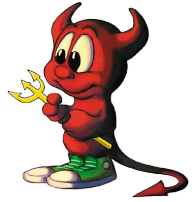

Início e Fundação (1993): Debian foi criado por Ian Murdock em agosto de 1993. Murdock queria desenvolver uma distribuição de Linux que fosse totalmente aberta e colaborativa. O nome "Debian" vem da combinação do seu nome e o da sua então namorada, Debra.

Primeiras Versões (1996-1998): A primeira versão estável, Debian 1.1, foi lançada em 1996. A distribuição ganhou popularidade rapidamente devido à sua estabilidade e ao sistema de gerenciamento de pacotes dpkg. No final dos anos 90, Debian já era uma distribuição respeitada.
Desenvolvimento e Crescimento (2000-2005): Debian consolidou-se como uma das principais distribuições de Linux. Em 2003, o projeto adotou um modelo de versões "stable" (estável), "testing" (teste) e "unstable" (instável), permitindo aos usuários escolher entre diferentes níveis de estabilidade e inovação.
Diversificação e Novas Iniciativas (2005-2010): Durante este período, Debian lançou versões importantes, como Debian 5.0 "Lenny" em 2009. A distribuição tornou-se a base para outras distros notáveis, como o Ubuntu.
Modernização e Atualizações (2010-2015): A distribuição continuou a evoluir com lançamentos como Debian 6.0 "Squeeze" e Debian 7.0 "Wheezy". A comunidade trabalhou para melhorar a acessibilidade, a segurança e o suporte para hardware moderno.
Debian Atual (2015-presente): Recentemente, Debian lançou versões como Debian 8.0 "Jessie", Debian 9.0 "Stretch" e Debian 10.0 "Buster". A versão Debian 11 "Bullseye" foi lançada em 2021, e Debian 12 "Bookworm" está em desenvolvimento. Debian continua a ser uma das distribuições mais respeitadas no mundo do software livre.
Mascote Damon
O Debian possui um mascote chamado "Damon". Damon é um diabo amigável, com um visual simpático e não ameaçador. O design do mascote representa o espírito de comunidade e o caráter acessível do projeto Debian.